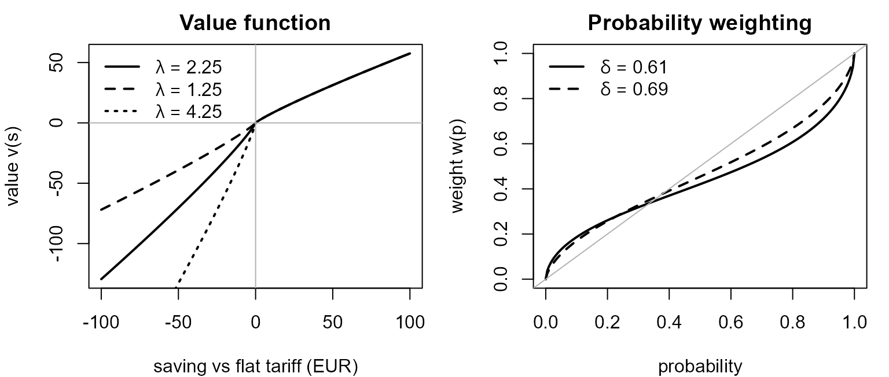

vignettes/model-description.Rmd
model-description.RmdThis article describes the model as implemented in the
code. Function names link to the reference pages. Parameter
values quoted here are the defaults in the Base sheet of
inst/ext_data/scenario_parameters.xlsx, available in the
package as the dataset sD.
depmicrosimr is an agent-based model (ABM) of Irish households choosing between electricity tariffs. It has two aims: to project how many households move from a flat tariff to a time-of-use (ToU) or dynamic tariff, and to describe the load shifting that follows, so that the consequences for the power system can be studied.
The model combines five ingredients:
| Ingredient | In one line | Main functions |
|---|---|---|
| Agents | About 1,200 synthetic households built from a 2024 household survey | initialise_agents() |
| Prices | Simulated wholesale prices and a retail model that turns them into flat, ToU and dynamic tariffs |
sem_prices(), set_prices()
|
| Load shifting | A household shifts load to cut its bill, subject to behavioural costs | get_flex() |
| Decision rule | Households compare plans using prospect theory and are influenced by their neighbours |
evaluate_tariffs(), evaluate_full_cost(),
get_ce_value()
|
| Social network | A homophilous network over which tariff choices spread | make_artificial_society() |
Time runs in bi-monthly steps (six per year) from January
2019. 2019 is before smart-meter rollout, so households start
on a flat tariff or on the old day/night tariff. Dynamic pricing is
introduced in mid-2026 (dep_introduction = 2026.5).
runABM(scen, Nrun, simulation_end, ...)
└─ for each simulation j = 1..Nrun (parallelisable, independent)
├─ prices_scen <- set_prices(scen) # new price path
├─ social <- make_artificial_society(...) # new network
├─ agents_0 <- initialise_agents(...) # new agent draw
└─ for t = 2..Nt # one step = 2 months
└─ agents_t <- update_agents(agents_{t-1}, ...)At each step update_agents():
scenario_params());tou_old) to tou once their smart meter has
been installed (yeartime >= rollout);p. of
the population (p. = 0.03, an inertia parameter described
in the scenario sheet as estimated from CRU switching data; stochastic
rounding is used, see roundr()). Only these households
re-evaluate their tariff in this step;Each run therefore uses its own price path, its own network and its own random agent attributes, so variation between runs reflects all three sources of uncertainty.
Agents are the respondents of a 2024 household survey (Li et al.,
2024), stored as dep_survey.
initialise_agents() builds the starting state as
follows.
kWh) is inferred
from each respondent’s reported highest and lowest bi-monthly
electricity bills, converted to kWh with 2023 SEAI prices, and fitted
with a sinusoidal seasonal demand model
(survey_bills_to_kwh(), demand_fun()). Missing
bills are imputed stochastically, so kWh varies from run to
run.flat. Of the respondents on a day/night tariff, two thirds
are assumed to be on the old day/night tariff (tou_old) in
2019 and the rest on flat. Prepay customers are
removed.smart_meter_rollout).lp1, rural households lp3. Households on the
old day/night tariff have the measured ToU profiles lp2
(urban) and lp4 (rural). See
load_profiles_generalised.struct_params.dyn_aware_year (2028.5 in the base scenario). Before that
date the dynamic plan is not in its choice set.Each household gets the following, using the traits above.
flex_scores, flex_score_cube(),
match_flex_params()). The mapping is one-to-many, so the
match is randomised among the two nearest grid points. \(\phi\) and \(\eta\) are the same for all households
(defaults 0.4 and 0.3).pt_min_loss_aversion (1.25) to
pt_max_loss_aversion (4.25).degree is the
household’s number of network contacts, and q_tou,
q_dyn are how many of them are on a ToU or dynamic
tariff.The calibration target for aggregate flexibility is the difference
between the standard flat (lp1) and ToU (lp2)
load profiles (14.4%). initialise_agents() prints summary
statistics of the household flexibility scores next to that target.
sem_prices() returns hourly wholesale prices for the
Single Electricity Market: observed prices for 2019 to 2025, then a
simulation. Prices are modelled on a log-like scale
that tolerates negative prices,
\[ y_t = \operatorname{arcsinh}\!\left(\frac{p_t}{s}\right), \qquad s = 0.01~\text{€/kWh}, \]
so that \(p_t = s \sinh(y_t)\). The simulated series is a sum of four parts:
\[ y_t = \underbrace{\text{trend}_t}_{\text{scenario}} + \underbrace{\text{day}_t + \text{week}_t + \text{year}_t}_{\text{STL seasonality, 2019--2025}} + \underbrace{\varepsilon_t}_{\text{3-state Gaussian HMM}} . \]
decompose_logprices(), stored in
sem_logprices_2019_2025_decomp).hmm_fit, generate_logprice_hmm(),
simulate_hmm()). The states are intended to capture
high-renewables, normal and low-renewables regimes. Because the HMM is
Gaussian on the log-like scale, price variance is state-dependent.shock = TRUE)
multiplies the trend price by four from 1 January 2030, decaying with a
one-year time constant.The price path does not respond to household behaviour: there is no feedback from aggregate load shifting to prices.
set_prices() turns wholesale prices into three
consistent retail tariffs on an hourly grid, for the whole simulated
period:
\[ p^{\text{dyn}}_t = \bigl(1 + \text{VAT}_t\bigr)\Bigl[\min\bigl(\text{cap}_t,\; p^{\text{sem}}_t\bigr) + n_{b(t)}(t)\Bigr]. \]
The cap starts at 0.5 €/kWh in 2026 (the CRU dynamic price cap) and
scales with the wholesale trend price. \(n_b(t)\) is the network charge for the
hour’s ToU band \(b \in
\{\text{night},\text{day},\text{peak}\}\), interpolated between
scenario values for 2020, 2026, 2030 and 2040. The ToU bands are in the
package data load_profiles_generalised (night 23:00–08:00,
peak 17:00–19:00, day otherwise, adjusted for daylight saving). *
Flat. A single price that follows a trailing
365-day load-weighted mean of the dynamic price (with a 2% hedging
premium), using a weighted mixture of the standard flat and ToU load
profiles (lp1, lp2). The flat tariff therefore
lags the market. * ToU. The same trailing average,
computed separately within each ToU band.
The parameter w (default 1/3 in
set_prices() and runABM()) sets how much of
the value of flexibility suppliers retain, so that a household with no
flexibility can be worse off on ToU or dynamic than on flat. VAT is
13.5% before 2022.4, 9% from 2022.4, and 13.5% from 2031
(vat_rate_fun()). Standing charges
(standing_charge_fun()) rise from €130 (2015) to €350
(2040); the dynamic plan adds a premium (€75 in the base scenario).
Each household’s bill is price times load, summed over 12 months, plus the standing charge.
The core of the model is get_flex(). Given a price
series and a natural load profile for a household, it finds the hourly
load that minimises bill plus behavioural cost.
Over a horizon of \(T\) hours (one year), let \(L^0_t\) be the household’s natural load (its profile under flat prices) and \(x_t\) the change from it, so that the shifted load is \(L_t = L^0_t + x_t\). Total annual energy is \(E = \sum_t L^0_t\). The household solves
\[ \min_{x}\;\; \sum_t p_t\,x_t \;+\; \frac{\tilde\eta}{2}\sum_t (x_{t+1}-x_t)^2 \;+\; \frac{\tilde\gamma}{2}\sum_t \Bigl(\sum_k g(k-t)\,x_k\Bigr)^{2} \]
subject to
\[ \sum_t x_t = 0, \qquad -(1-\phi_t)\,L^0_t \;\le\; x_t \;\le\; P_{\max} - L^0_t . \]
In words:
mic = 12 in the
base scenario).The scaled coefficients are \(\tilde\eta =
\eta\cdot 8760/E\) and \(\tilde\gamma =
\gamma\,(8760/E)/\lVert g\rVert^2\), so that \(\gamma\) and \(\eta\) are expressed for a household with a
standard 8,760 kWh annual load. The kernel is exponential by default,
\(g(\ell) = e^{-|\ell|/\tau}\), with
Gaussian, Cauchy and Matérn alternatives selectable through the
kernel argument. The problem is a sparse convex quadratic
programme solved with OSQP (Stellato et al., 2020).
A fraction \(\phi\) of load is
inflexible. It varies through the day with a factor \(f_h\) (diurnal_inflex,
estimated from the lowest quantile of smart-meter profiles of households
without solar PV, normalised to a mean of one). The inflexible share in
hour \(t\) is
\[ \phi_t = \phi - (1-\phi)\ln(1-\phi)\,(f_{h(t)} - 1), \]
which averages to \(\phi\) and tends to one as \(\phi \to 1\) whatever \(f\) is.
The package summarises how much a household shifts using a flexibility score, the share of annual energy that is moved:
\[ \text{flex} = 100 \times \frac{\tfrac12 \sum_t |x_t|}{E} \;\%. \]
get_flex_scores() computes it at one-hour resolution and
for coarser windows, and the precomputed table flex_scores
links \((\phi,\eta,\gamma,\tau)\) to
scores.
When the household’s decision depends on the behavioural cost
(behavioural model "full", section 7), the cost of the
flexible plan is the optimised bill plus the two penalty terms evaluated
at the optimum:
\[ \text{cost}^{\text{flex}} = \sum_t p_t L_t + \text{standing charge} + \tfrac12\tilde\gamma \lVert Kx\rVert^2 + \tfrac12\tilde\eta \sum_t (x_{t+1}-x_t)^2 , \]
computed in get_full_annual_cost().
flat: always.tou: once the household’s smart meter is installed
(yeartime >= rollout).dynamic: once the household is aware of it
(yeartime >= dyn_aware).Households evaluate each plan on the simulated hourly prices for the twelve months starting at the decision date. In effect they have perfect foresight over a one-year horizon.
For ToU and dynamic plans the household computes two annual costs, relative to its flat bill \(B^{\text{flat}}\):
The savings are \(s^{\text{flex}} = B^{\text{flat}} - B^{\text{flex}}\) and \(s^{\text{noflex}} = B^{\text{flat}} - B^{\text{noflex}}\). The second can be a loss.
Switching is treated as a risky prospect with two outcomes. The household succeeds in shifting with probability \(c\) (its confidence) and fails with probability \(1-c\). Outcomes are valued with the Tversky–Kahneman (1992) value function and probabilities are distorted by a weighting function:
\[ v(s) = \begin{cases} s^{\alpha} & s \ge 0 \\ -\lambda\,(-s)^{\beta} & s < 0 \end{cases}, \qquad w(c;\delta) = \frac{c^{\delta}}{\bigl(c^{\delta} + (1-c)^{\delta}\bigr)^{1/\delta}} . \]
The prospect value and its euro-denominated certainty equivalent are
\[ \text{PV} = w(c;\delta^{+})\,v(s^{\text{flex}}) + w(1-c;\delta^{-})\,v(s^{\text{noflex}}), \qquad \text{CE} = \begin{cases} \text{PV}^{1/\alpha} & \text{PV}\ge 0 \\ -\bigl(-\text{PV}/\lambda\bigr)^{1/\beta} & \text{PV}<0 \end{cases} \]
with \(\alpha=\beta=0.88\), \(\delta^{+}=0.61\) (used for the
“flexibility achieved” outcome) and \(\delta^{-}=0.69\) (used for the “not
achieved” outcome). These come from sD. The loss-aversion
coefficient \(\lambda\) is
agent-specific (section 3.2); the value 2.25 in
sD is only the default for stand-alone calls to
get_ce_value().

The confidence \(c\) that a household will manage to shift load is not fixed. It rises with the share of the household’s network contacts who have already adopted:
\[ c^{\text{tou}} = c_{\text{tou}} + \min\!\Bigl(1, \tfrac{q_{\text{tou}}+q_{\text{dyn}}}{\text{degree}}\Bigr)\,(c_{\text{tou}}^{\max}-c_{\text{tou}}), \]
\[ c^{\text{dyn}} = c_{\text{dyn}} + \min\!\Bigl(1, \tfrac{q_{\text{dyn}}}{\text{degree}}\Bigr)\,(c_{\text{tou}}-c_{\text{dyn}}), \]
with base-scenario values \(c_{\text{tou}} = 0.70\), \(c^{\max}_{\text{tou}} = 0.85\) and \(c_{\text{dyn}} = 0.50\). A household whose neighbours all use ToU or dynamic tariffs is therefore as confident about ToU as 0.85, and one whose neighbours all use dynamic tariffs is as confident about dynamic as it would be about ToU without any social reinforcement (0.70). Households with no contacts feel no social effect.
The behavioural_model argument of runABM()
and update_agents() selects how costs enter the
decision:
| Value | Flexible-plan cost | Status |
|---|---|---|
"prospect" |
Optimised bill only (evaluate_tariffs()) |
Current |
"full" |
Optimised bill plus the \(\gamma\) and \(\eta\) behavioural penalties
(evaluate_full_cost()) |
Current; the default in runABM()
|
"classic" |
Cheapest-plan rule with a social term and a threshold \(\theta\) | Legacy |
make_artificial_society() builds a random
homophilous network over the agents (Gower distance on
the demographic variables in dep_society_1, weighted by
homophily). The probability that two agents are linked
falls with their social distance \(d_{ij}\):
\[ P(i \sim j) \propto (1-d_{ij})^{\nu}, \qquad \nu = 4.5, \]
rescaled so that each agent’s expected number of contacts
approximately matches the degree reported in the survey. Agents who
reported no social contacts stay isolated. The network is
static within a run.
get_network_characteristics() tabulates its assortativity
by demographic variable.
The scenario workbook has one sheet per scenario. sD is
the Base sheet.
| category | parameter | value | unit |
|---|---|---|---|
| policy | dep_introduction | 2026.50000 | NA |
| policy | tou_introduction | 2021.00000 | NA |
| policy | old_vat_rate | 0.13500 | NA |
| policy | new_vat_rate | 0.09000 | NA |
| policy | post_2030_vat_rate | 0.13500 | NA |
| policy | dynamic_cap_2026 | 0.50000 | €/kWh |
| market | sem_price_2026 | 0.09300 | €/kWh |
| market | sem_price_2030 | 0.10000 | €/kWh |
| market | sem_price_2040 | 0.10000 | €/kWh |
| market | day_network_charge_2020 | 0.16838 | €/kWh |
| market | night_network_charge_2020 | 0.07242 | €/kWh |
| market | peak_network_charge_2020 | 0.19168 | €/kWh |
| market | day_network_charge_2026 | 0.19810 | €/kWh |
| market | night_network_charge_2026 | 0.08520 | €/kWh |
| market | peak_network_charge_2026 | 0.22550 | €/kWh |
| market | day_network_charge_2030 | 0.21791 | €/kWh |
| market | night_network_charge_2030 | 0.10501 | €/kWh |
| market | peak_network_charge_2030 | 0.24531 | €/kWh |
| market | day_network_charge_2040 | 0.25753 | €/kWh |
| market | night_network_charge_2040 | 0.14463 | €/kWh |
| market | peak_network_charge_2040 | 0.28493 | €/kWh |
| market | standing_charge_2015 | 130.00000 | euros |
| market | standing_charge_2022 | 215.00000 | NA |
| market | standing_charge_2025 | 265.00000 | NA |
| market | standing_charge_2030 | 320.00000 | NA |
| market | standing_charge_2040 | 350.00000 | NA |
| market | dep_standing_charge_premium_2026 | 75.00000 | NA |
| market | dep_standing_charge_premium_2030 | 75.00000 | NA |
| market | dep_standing_charge_premium_2040 | 75.00000 | NA |
| technical | mic | 12.00000 | 12kVA or 12kWh |
| prospect theory | pt_alpha | 0.88000 | prospect theory |
| prospect theory | pt_beta | 0.88000 | prospect theory |
| prospect theory | pt_loss_aversion | 2.25000 | prospect theory not used |
| prospect theory | pt_prob_weight_gains | 0.61000 | prospect theory |
| prospect theory | pt_prob_weight_losses | 0.69000 | prospect theory |
| prospect theory | pt_certainty_flex_tou | 0.65000 | confidence with zero social reinforcment |
| prospect theory | pt_certainty_flex_tou_max | 0.85000 | confidence with full social reinforcement |
| prospect theory | pt_certainty_flex_det | 0.40000 | dynamic confidence with zero social refinforement |
| prospect theory | pt_max_loss_aversion | 4.25000 | NA |
| prospect theory | pt_min_loss_aversion | 1.25000 | NA |
| calibration | flex_alpha. | 2.00000 | NA |
| calibration | flex_beta. | 2.00000 | NA |
| calibration | loss_alpha. | 2.00000 | NA |
| calibration | loss_beta. | 4.00000 | NA |
| calibration | p. | 0.03300 | estimate from CRU switching data |
| calibration | s. | 0.01000 | euro/kWh |
| calibration | w. | 0.33000 | flexibility value pass-through parameter used in set_prices() |
| calibration | dyn_aware_year | 2028.50000 | year time at which awareness of dynamic pricing is universal. Must be > 2026.5. |
The other sheets in the workbook are variations on the base.
According to the workbook’s Description sheet,
EDSC and LDSC vary the dynamic standing-charge
premium, LowPrice and HighPrice change the
wholesale price path for 2030 and 2040, and NoToU and
Battery are further intended variants. Check the sheet
values against the descriptions before relying on a scenario; the
workbook is inst/ext_data/scenario_parameters.xlsx in the
repository.
runABM() returns a list of three elements.
abm: a data frame with one row per agent, per time step
and per simulation. It holds the household’s state at that date:
serial, kWh, tariff_plan,
rollout, area, phi,
eta, gamma, tau,
lambda, flex_score,
natural_profile, profile,
annual_bill, degree, q_tou,
q_dyn, dyn_aware, the confidences
c_tou_soc and c_det_soc, the certainty
equivalents CE_tou and CE_det where computed,
simulation, and date. The exact set of columns
depends on the behavioural model.scenario: the scenario table that was used.system: the run settings (number of runs, end year,
inertia p., behavioural model, shock, w, and
the confidence parameters).Adoption curves are obtained by counting tariff_plan by
date. See vignette("getting-started").
These follow directly from the code and are worth keeping in mind when interpreting results.
lp1) or rural (lp3) natural profile scaled by
their annual consumption. There is no explicit representation of solar
PV, batteries, electric vehicles or heat pumps in the code.initialise_agents() does not use the survey weights
(dep_survey$weights).